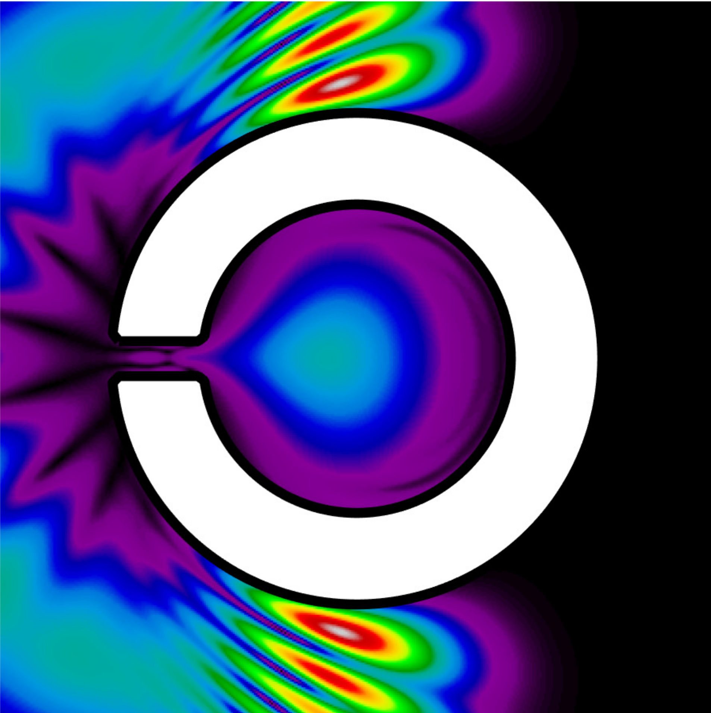
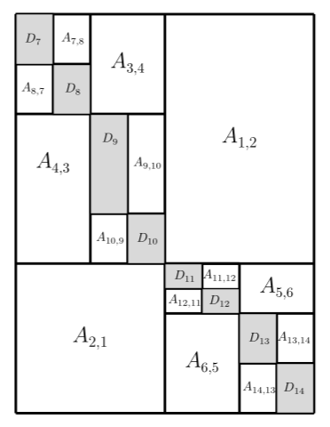
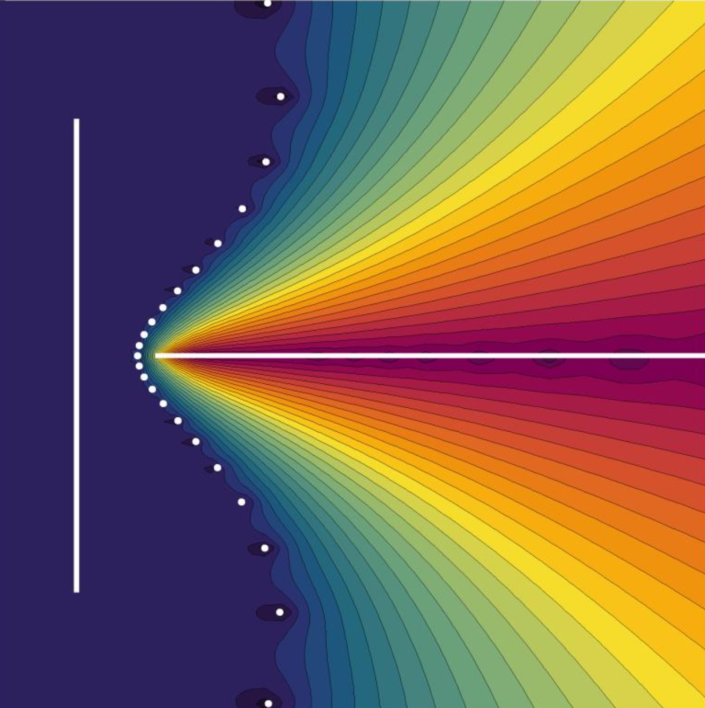
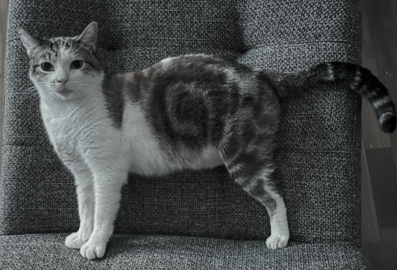
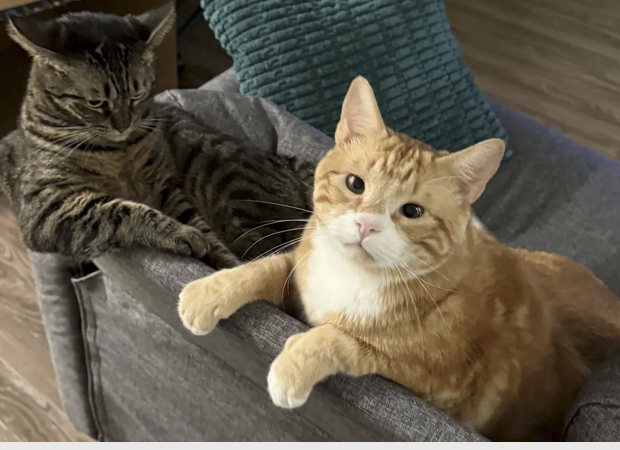
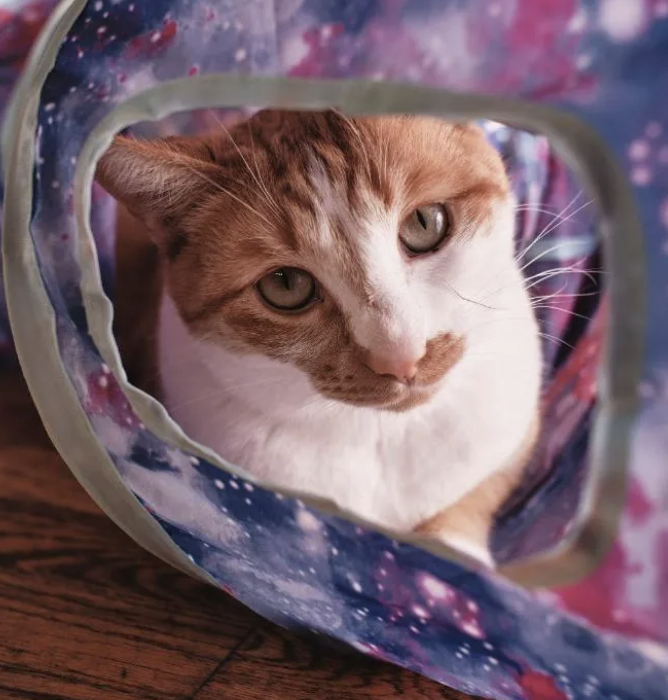

Heather Wilber
Assistant Professor · Applied Mathematics · University of Washington
My research sits at the intersection of approximation theory, numerical linear algebra, and scientific computing. I develop and analyze fast direct methods for solving PDEs via hierarchical numerical linear algebra, low-rank and rank-structured approximation methods, boundary integral equation methods, and robust numerical methods for nonlinear approximations to functions.
Current projects

Parametrized PDEs
Many applications require solutions to families of PDEs dependent on continuous parameters. Such families often have interesting shared structures: if these can be thoroughly explained, fast numerical methods that take advantage of them can be developed. Another exciting angle of this work is the development of new numerical methods based on parametrization. As a simple example, multi-dimensional domains can be re-imagined as volume integrals over lower-dimensional slices dependent on parameters that vary continuously under the integral. Exploiting shared structures in the slices gives us new discretization schemes for solving challenging PDEs. This work fuses together fast direct solvers, hierarchical low rank structures, and boundary integral equation methods. The picture on the right is a computation of the magnitude of an acoustic wave trapped in a keyhole region.

Fast methods for structured matrices and operators
Hierarchical low rank structures arise in matrices related to interactions between particles, planets, chemical species, and various other creatures. They also show up in data science in numerous ways (e.g., covariance matrices). While decades of work have been devoted to exploiting these structures in the context of PDEs and square systems, far less work has focused on how they can be used in rectangular systems and in the design of fast methods for solving standard optimization problems. From least-squares to LASSO, we are investigating the ways that hierarchical numerical methods can be adapted to optimization algorithms. Closely related to this work is our continued investigation into highly structured matrices in computational mathematics, including Cauchy, Toeplitz, Hankel, and Vandermonde matrices, as well as block-variants of these. The picture on the right shows an example of the structure found in a rectangular hierarchical matrix.

Rational approximation
Rational approximation methods are a cornerstone of applied and computational mathematics. Any iterative method involving the application of matrix inverses probably has a rational function at its core: studying how and why rational functions work well as approximants of more complicated functions helps us explain these methods and design new methods. Rational functions are also useful in signal processing and data science, serving as an approximation class that is especially good for tasks requiring the capture or identification of sharp features and transitions, extrapolation, or slow frequency decay. Fully explaining these properties in a rigorous sense, as well as designing new methods for making use of them in signal processing, is the major goal of our current work. The image on the left is a rational approximation to the sign function defined over the white lines, shown in the complex plane. The poles of the function (white dots) are useful in understanding key properties of function approximation in the domain.
Working with me
My research group includes several UW PhD students. Wietse Vaes is working on PDE solvers for waves and scattering. Arjun Sethi-Olowin is working on hierarchical methods for optimization problems. Emily Zhang and Levent Batakci are working on rational approximation in computation, and Laura Thomas is working on computational methods and approximation theory for pseudospectra in matrix pencils. Jenny Green is working with me on hierarchical structures in transform matrices, and Sejal Gupta is working with me on low rank structures in dynamical systems. Bryce Parry, a UW M.S. student, is working with me on quadrature methods for singular integrals. Raaga Vangala is a U.W. undergraduate working with me on Zolotarev rational approximation problems.
If you are any PhD student at UW looking for a GSR, please don't hesitate to reach out — I love hearing about what students in applied computational fields are working on, and am happy to serve on committees outside applied math as well.
I do not currently have research positions available for PhD, M.S., or undergraduate students. Check in next quarter.



Papers and Presentations
papers
-
PDF of Low-rank approximation by randomly pivoted LUM.A. Gilles, H. Wilber — Low-rank approximation by randomly pivoted LUsubmitted · SIMAX
-
PDF of A time-frequency method for acoustic scattering with trappingH. Wilber, W. Vaes, A. Gopal, P.G. Martinsson — A time-frequency method for acoustic scattering with trappingsubmitted · J. Comp. Phys.
-
PDF of The Akhiezer iteration and an inverse-free solver for Sylvester matrix equationsC. Ballew, T. Trogdon, H. Wilber — The Akhiezer iteration and an inverse-free solver for Sylvester matrix equationssubmitted · IMA J. Num. Analysis
-
PDF of Compression properties for large Toeplitz-like matricesB. Beckermann, D. Kressner, H. Wilber — Compression properties for large Toeplitz-like matricesNum. Algorithms 100.4 (2025), 2041–2067
-
PDF of Computation of Zolotarev rational functionsL.N. Trefethen, H. Wilber — Computation of Zolotarev rational functionsSISC 47.4 (2025), A2205–A2220
-
PDF of A superfast direct inversion method for the nonuniform discrete Fourier transformH. Wilber, E.N. Epperly, A.H. Barnett — A superfast direct inversion method for the nonuniform discrete Fourier transformSISC 47.3 (2025), A1702–A1732
-
PDF of Data-driven algorithms for signal processing with trigonometric rational functionsH. Wilber, A. Damle, A. Townsend — Data-driven algorithms for signal processing with trigonometric rational functionsSISC 44-3 (2022), C185–C209
-
PDF of Bounding Zolotarev numbers using Faber rational functionsD. Rubin, A. Townsend, H. Wilber — Bounding Zolotarev numbers using Faber rational functionsConst. Approx. 56 (2022), 1–26
-
PDF of Chebyshev approximation and the global geometry of model predictionsQuinn, Wilber, Townsend, Sethna — Chebyshev approximation and the global geometry of model predictionsPhys. Rev. Lett. 122 (2019), 158302
-
PDF of On the singular values of matrices with high displacement rankA. Townsend, H. Wilber — On the singular values of matrices with high displacement rankLAA 548 (2018), 19–41
-
PDF of Computing with functions in spherical and polar geometries II: the diskH. Wilber, A. Townsend, G.B. Wright — Computing with functions in spherical and polar geometries II: the diskSISC 39 (2017), C238–C262
-
PDF of Computing with functions in spherical and polar geometries I: the sphereA. Townsend, H. Wilber, G.B. Wright — Computing with functions in spherical and polar geometries I: the sphereSISC 38 (2016), C403–C425
theses
-
M.S. ThesisPDF of M.S. Thesis
-
PhD ThesisPDF of PhD Thesis
upcoming conferences & visits
- May 2026 27th Conference of the ILAS — Blacksburg, VA
- Mar 2026 Berkeley Applied Mathematics Seminar — Berkeley, CA
- Mar 2026 BIRS Workshop: Women in computational methods for PDEs — Banff, Canada
- Sept 2025 Mittag-Leffler Program: Interfaces and Unfitted Discretizations — Djursholm, Sweden
selected presentations
- Acoustic waves in unfriendly domains slides (PDF)
- Zolotarev numbers and the nonuniform discrete Fourier transform slides (PDF)
- REfit: data-driven computing with trigonometric rationals poster (PDF)
- Low rank numerical methods via rational approximation slides (PDF)
- Computing with functions on the sphere and disk poster (PDF)
software
Solving acoustic scattering problems with time-frequency methods (MATLAB)
Inverse non-uniform discrete Fourier transform (MATLAB)
Computing with structured matrices in MATLAB (currently a sandbox)
Rational functions and exponential sums (MATLAB)
Low-rank solver for Sylvester equations (MATLAB)
Functions on the unit disk (MATLAB)
Functions on the unit sphere (MATLAB)
Select Awards & Fellowships
- Householder Prize2022
- AWM Dissertation Prize2022
- NSF Mathematical Sciences Postdoctoral Research Fellowship2021–2023
- SIAM UKIE Prize: best student presentation, 27th Biennial Numerical Analysis Conference2019
- NSF Graduate Research Fellowship2016–2020
- Boise State University Distinguished M.S. Thesis in STEM2017
- NASA ISGC Fellowship2015–2016
Contact
office
LEW 328
address
Department of Applied Mathematics
University of Washington
Lewis Hall #201, Box 353925
Seattle, WA 98195-3925